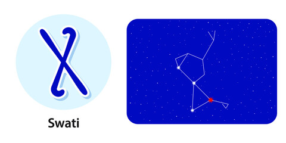

Nakshatra Swati
Swati Nakshatra
Characteristics male
The male born in Swati Nakshatra likes to do everything on his own, aka is self-dependent. As a rare one, these natives live life by the rules ensuring no one gets hurt by their actions. The male born in Swati Nakshatra is old-school romantic and very loving towards you even if you are not dating them. They know how to make you feel comfortable and never hesitate to give respect where it is due. These natives also crave love and aren't habitual of being single after crossing a certain age. On the downside, these males usually undergo long spells of bad phases when they wish to cut everyone off from their life. Also, the male born in Swati Nakshatra never forgets anything and thus carries his childhood scars well into his adulthood.Profession male
The male born in Swati Nakshatra is intelligent but will only be able to use the intelligence at its full potential after the age of 25. Till then, he may suffer both financially and mentally. Astrologers advise these natives to focus on practical skills till the age of 25 to do well in career thereafter. Profession-wise, the best time for this native is 30-60 years of age. The most suitable profession for these natives is anything related to wood. Also, any business must be done in partnership to have the best gains. Speculative investments are harmful to your wallet.Compatibility male
The male born in Swati Nakshatra will have to work harder to enjoy a happy married life. The reason for incompatibility may be lack of finances and arguments surrounding the situation. However, the marriage will be compatible enough that no outsiders or even your respective families would be able to find out the ongoing problem. Also, the male born in Swati Nakshatra is more likely to have an arranged marriage. He will also not be much attached to his father.Health male
The health of the male born in Swati Nakshatra will be excellent. However, occasionally he may suffer from stomach problems, piles or bone aches.Characteristics female
The female born in Swati Nakshatra is very outgoing, social and compassionate about her goals in life. However, these modern qualities within her don't stop her from being religious, as she is also a God-fearing pious human. The lady - despite being social - struggles at making new friends. The same goes when finding a partner, as she takes her time to make the right choices when it comes to relationships. But when in love, she is very loyal and honest and won't hurt you even if you are the first to hurt them. The female born in Swati Nakshatra takes everything in life as a lesson and believes in moving on. Also, she doesn’t like travelling much and prefers to stay at home as much as possible.Profession female
The female born in Swati Nakshatra is capable of more than she can imagine when it comes to her professional life. If she works dedicatedly, the nakshatra favours her by allowing her more name and fame in her profession than she could ever imagine. However, the lady born in this nakshatra will have to struggle quite a bit to acquire an education. She may also have to drop out, such a scenario will only delay and not take success away from her. Any job that requires a lot of travelling is suitable for the female born in Swati Nakshatra even though she does not like travelling much.Compatibility female
The female born in Swati Nakshatra is very much attached to her family. This love often could lead her to make compromises that she doesn't want to. This can make her distressed but the love and affection she gets from her children more than makes up for it. However, some share of the compromises must lie upon your husband too. Talking about husband, you two will have average compatibility and will be able to forge a sound and happy marriage. At your parents' place, you will share a close bond with your mother.Health female
The female born in Swati Nakshatra is very much attached to her family. This love often could lead her to make compromises that she doesn't want to. This can make her distressed but the love and affection she gets from her children more than makes up for it. However, some share of the compromises must lie upon your husband too. Talking about husband, you two will have average compatibility and will be able to forge a sound and happy marriage. At your parents' place, you will share a close bond with your mother.Swati Nakshatra Padas
1. Pada 1st: The first pada of the Swati Nakshatra falls in the Sagittarius Navamsa and is ruled by Jupiter. The peole born in this pada are religious. These people are also very scholarly, knowledgeable with high grasping power.
2. Pada 2nd: The second pada of the Swati Nakshatra falls in the Capricorn Navamsa and is ruled by Saturn. The people born in this pada are rooted. Planets here give a sound business sense to these natives.
3. Pada 3rd: The third pada of the Swati Nakshatra falls in the Aquarius Navamsa and is ruled by Saturn. The people born in this pada are spendthrift and lustful in nature. They are also very short tempered.
4. Pada 4th: The fourth pada of the Swati Nakshatra falls in the Pisces Navamsa and is ruled by Jupiter. The people born in this pada are intelligent but emotional. Your social circle is large and often comes to your rescue.